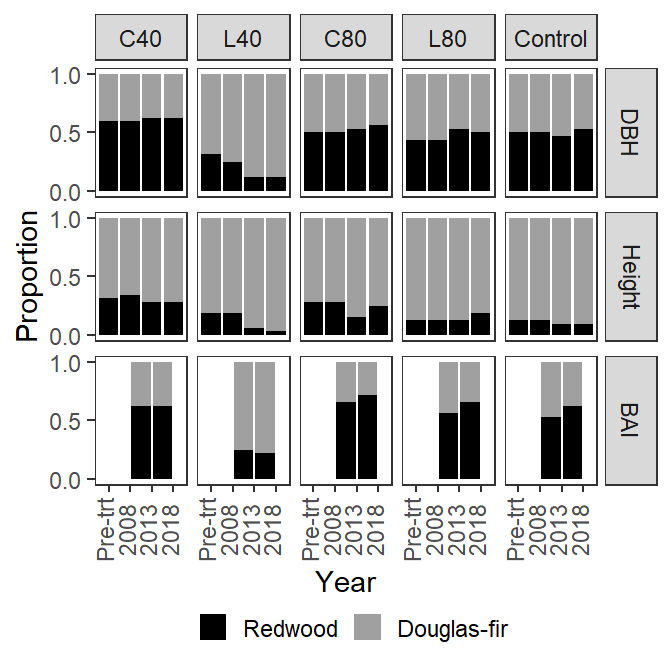

library(tidyverse)I’m interested in creating a measure of species dominance. I will select the 4 largest trees per plot and then determine what proportion of these are from each species. I will only consider and report on RW and DF. I could augment this by showing the average size of the dominant tree by species.
For this two function, the four highest ranking trees (height, growth, or diameter) were selected from each plot these were aggregated at the treatment level to determine the proportion of dominant trees in each species.
If I want to do hypothesis testing, I need to have two datasets, one of the raw data (counts of trees per plot) and one of the average proportion. I may want to do this with all of my metrics. The final aggregation may be able to be done with a single function, depending on how data were aggregated for each metric. Qmd is the only metric where the mean is not straight forward, as it is the square root of the mean of squared diameters.
For this to make sense for heights, we will need to predict heights for missing trees because the largest trees are missing heights in many cases.
Although I refer to proportions here, this is of 100 TPH, so multiplying by 100 gives TPH.
spp_dom_raw <- function(data = d_l, metrics = NULL, years = NULL) {
if(is.null(years)) years <- c("08", "13", "18")
if(is.null(metrics)) metrics <- c("dbh", "ht_p", "ba_inc2")
raw <- data %>%
filter(
spp %in% c("SESE3", "PSMEM"),
live | status %in% c(15, 16),
year %in% years
) %>%
select(year, treatment, spp, plot, all_of(metrics)) %>%
pivot_longer(cols = all_of(metrics), names_to = "measure") %>%
group_by(measure, year, treatment, plot) %>%
slice_max(order_by = value, n = 8, with_ties = FALSE) %>%
ungroup()
missing <- raw$measure[raw$value == 0 | is.na(raw$value)]
if(length(missing) > 0) {
message <- "Measures missing values (entries removed):"
warning(paste(message, toString(unique(missing))))
}
filter(raw, value != 0)
}
spp_dom_cnt <- function(...) {
spp_dom_raw(...) %>%
count(measure, year, treatment, plot, spp) %>%
ungroup() %>%
complete(nesting(treatment, year, plot), spp, measure, fill = list(n = 0))
}
spp_dom_pct <- function(...) {
spp_dom_cnt(...) %>%
group_by(measure, treatment, year, spp) %>%
summarise(n = sum(n)) %>%
mutate(freq = n / sum(n)) %>%
arrange(measure, treatment, spp, year) %>%
ungroup()
}dominance_labels <- as_labeller(
c(
ba_inc2 = "BAI",
dbh = "DBH",
ht_p = "Height"
),
label_parsed
)
make_dominance_fig <- function(...) {
spp_dom_pct(...) %>%
relevel_treatment() %>%
mutate(
measure = factor(measure, levels = c("dbh", "ht_p", "ba_inc2")),
year = case_when(
year == 13 & measure == "ba_inc2" ~2010.5,
year == 18 & measure == "ba_inc2" ~2015.5,
year == "init" ~2003,
year == "08" ~2008,
year == "13" ~2013,
year == "18" ~2018
)
) %>%
ggplot(aes(year, freq, fill = spp)) +
geom_bar(position = "stack", stat = "identity", width = 4.5) +
facet_grid(
vars(measure),
vars(treatment),
labeller = labeller(measure = dominance_labels)
) +
theme_bw() +
theme(
panel.spacing.x = unit(1.3, "mm"),
legend.position = "bottom",
legend.title = element_blank(),
legend.key.size = unit(4, "mm"),
legend.box.spacing = element_blank(),
panel.grid = element_blank(),
# strip.background.y = element_blank(),
strip.placement = "outside",
axis.text.x = element_text(angle = 90, vjust = 0.25)
) +
# scale_x_continuous(breaks = yr_breaks) +
scale_y_continuous(breaks = c(0, .5, 1)) +
scale_x_continuous(
breaks = c(2003, 2008, 2013, 2018),
labels = c("Pre-trt", "2008", "2013", "2018")) +
scale_fill_manual("spp",
values = c(SESE3 = "black", PSMEM = "#a0a0a0"),
labels = c("Redwood", "Douglas-fir")
) +
labs(y = "Proportion", x = "Year")
}
make_dominance_fig(years = c("init", "08", "13", "18"))## Warning in spp_dom_raw(...): Measures missing values (entries removed): ba_inc2## Warning: Removed 20 rows containing missing values (position_stack).
ggsave(
filename = "figs/dominance_fig.pdf",
device = cairo_pdf,
width = 8.84,
height = 9,
units = "cm"
)## Warning: Removed 20 rows containing missing values (position_stack).ggsave(
filename = "figs/dominance_fig.jpg",
width = 8.84,
height = 9,
units = "cm"
)## Warning: Removed 20 rows containing missing values (position_stack).Now I need to display the average values for these dominant species, perhaps along with their standard deviations. I think I’ll just do this for each treatment in the most recent measurement period.
spp_dom_raw() %>%
group_by(year, treatment, measure) %>%
summarise(average = mean(value)) %>%
arrange(measure, treatment, year) %>%
pivot_wider(names_from = treatment, values_from = average) %>%
relocate(measure) %>%
kbl2(
caption = "Average metrics for top 100 TPH (ranked by the respective metric)",
digits = 2)## Warning in spp_dom_raw(): Measures missing values (entries removed): ba_inc2| measure | year | C | H40 | H80 | L40 | L80 |
|---|---|---|---|---|---|---|
| ba_inc2 | 13 | 51.09 | 84.40 | 76.35 | 61.10 | 67.30 |
| ba_inc2 | 18 | 64.82 | 105.16 | 90.52 | 76.59 | 70.82 |
| dbh | 08 | 40.54 | 41.72 | 40.91 | 38.69 | 39.85 |
| dbh | 13 | 43.63 | 47.09 | 45.24 | 42.09 | 43.98 |
| dbh | 18 | 47.39 | 52.49 | 50.40 | 46.66 | 48.40 |
| ht_p | 08 | 27.26 | 25.95 | 25.69 | 26.03 | 25.28 |
| ht_p | 13 | 28.44 | 27.65 | 27.77 | 28.08 | 27.74 |
| ht_p | 18 | 30.33 | 29.72 | 30.45 | 30.26 | 30.38 |
A Wilcoxon rank-sum test could be used to test if one treatment results in changes that are significantly greater than another treatment. Unfortunately, it seems like none of the treatments that show an average increase in the number of dominant SESE are significant at the alpha = 0.05 level, using a 1-sided test. One-sided permutation tests shows even larger p-values, and these I would expect to be more accurate given the number of zeros in the data.
To start, I will only test significance for dbh ranked dominance, to see if treatment effect is significant there. first I get a list of differences from 2008 to 2018 for each plot in a treatment, this represents the treatments effect on redwood dominance. Then I compare the treatments to see is ones with a larger average effect, are significantly larger than those with a smaller average effect: 1-sided non-parametric tests. Wilcox rank-sum has lower p-values, than the permutation test. The data has a lot of zeros, and very few data points, none of the one-sided differences are significant. It is too soon to tell if redwood dominance has been affected.
# This is the permutation calculation
new_diff <- function(d_null) {
new_samp <- sample(d_null)
mean(new_samp[5:8]) - mean(new_samp[1:4])
}
perm_test <- function(x, y, M = 1e5) {
obs_diff <- mean(x) - mean(y)
d_null <- c(x, y)
perm_diff <- replicate(M, new_diff(d_null))
sum(perm_diff >= obs_diff) / M
}
# Takes one of my dominance metrics: dbh, ht, ba_inc2
non_para_dom_test <- function(metric) {
# only 2013 and 2018 available for basal area increment
if(metric == "ba_inc2") years <- c("13", "18") else years <- c("08", "18")
# summarize differences between 2018 and 2013 for each treatment
# (plot differences)
W1 <- spp_dom_cnt(metrics = metric, years = years) %>%
filter(spp == "SESE3") %>%
group_by(plot) %>%
mutate(diff = n - lag(n)) %>%
drop_na() %>%
ungroup() %>%
select(treatment, measure, diff)
W <- with(W1, split(diff, treatment))
# Get all combinations of treatments, where average change of treatment 1
# is greater than the average for treatment 2
combos <- W1 %>%
group_by(treatment, measure) %>%
nest_by() %>%
mutate(avg = map_dbl(data, mean)) %>%
expand_grid(a = ., b = .) %>%
mutate(diff = a$avg - b$avg) %>%
arrange(desc(diff)) %>%
filter(diff > 0) %>%
transmute(treat.a = a$treatment, treat.b = b$treatment)
print(paste0("Test for ", metric, ":"))
apply(combos, 1, function(x) {
wilout <- wilcox.test(W[[ x[1] ]], W[[ x[2] ]], alternative = "g")
permout <- perm_test(W[[ x[1] ]], W[[ x[2] ]])
list(test = paste(x[1], ">", x[2]), Wilcox.P = wilout$p.value, Perm.P = permout)
}) %>%
bind_rows()
}non_para_dom_test("dbh")## [1] "Test for dbh:"## # A tibble: 8 x 3
## test Wilcox.P Perm.P
## <chr> <dbl> <dbl>
## 1 H80 > L40 0.0668 0.142
## 2 L80 > L40 0.0668 0.143
## 3 C > L40 0.310 0.285
## 4 H40 > L40 0.128 0.287
## 5 H80 > C 0.321 0.503
## 6 H80 > H40 0.304 0.499
## 7 L80 > C 0.321 0.499
## 8 L80 > H40 0.304 0.498non_para_dom_test("ba_inc2")## [1] "Test for ba_inc2:"## # A tibble: 9 x 3
## test Wilcox.P Perm.P
## <chr> <dbl> <dbl>
## 1 C > L40 0.0289 0.0571
## 2 L80 > L40 0.0683 0.142
## 3 C > H40 0.103 0.187
## 4 H80 > L40 0.0668 0.143
## 5 L80 > H40 0.176 0.241
## 6 H80 > H40 0.215 0.328
## 7 C > H80 0.304 0.501
## 8 H40 > L40 0.369 0.500
## 9 L80 > H80 0.437 0.499non_para_dom_test("ht")## [1] "Test for ht:"## # A tibble: 10 x 3
## test Wilcox.P Perm.P
## <chr> <dbl> <dbl>
## 1 L80 > H40 0.0316 0.0574
## 2 C > H40 0.0902 0.100
## 3 L80 > L40 0.0671 0.0990
## 4 H80 > H40 0.178 0.199
## 5 L80 > H80 0.231 0.213
## 6 C > L40 0.224 0.242
## 7 L40 > H40 0.5 0.301
## 8 L80 > C 0.221 0.297
## 9 C > H80 0.385 0.429
## 10 H80 > L40 0.385 0.429I first saw this metric in Motz, Sterba, and Pommerening (2010), where it appears to have been missapplied. There, it was given as: \[ U_i = \frac{1}{n} \sum^{n}_{j=1} 1 (DBH_i > DBH_j) \]
But they applied it to all trees, in which case, I assume that, leaving aside the issue to ties, the average would have to be 0.5.
Here I will calculate the species dominance metric separately for redwood and Douglas-fir components.
A stand composed of a single species should have an average Ui of 0.5
A species with more shade tolerance might have a lower Ui, because there are more trees in the understory, brining down average Ui.
Ui for redwood decreases in the control. This would suggest that the number of trees of other species out-competing (by diameter growth) redwoods is increasing, assuming the 4 nearest trees are in competition with any given tree. Because this metric is expressed as an average, it doesn’t account for the density of the species.
# Use live trees
dd <- d_l |>
filter(
live,
year != "init"
) |>
mutate(year = factor(year, ordered = FALSE)) |>
droplevels()
# calculate Ui for one observation, given observation number, dbh list and neighbors list
Ui_tree <- function(x, dbh, k_indices) {
focus_dbh <- dbh[x]
neighbors_dbh <- dbh[ k_indices[[x]] ]
mean(focus_dbh > neighbors_dbh)
}
# Ui for all observations
calc_Ui <- function(x, y, dbh) {
xy <- data.frame(x = x, y = y)
k_indices <- nearest(xy, k = 4)
sapply( 1:nrow(xy), Ui_tree, dbh, k_indices)
}
Ui_plot <- dd |>
group_by(treatment, year, plot) |>
mutate(val = calc_Ui(x, y, dbh)) |>
group_by(treatment, year, plot, spp) |>
summarize(val = mean(val)) |>
filter(spp %in% c("PSMEM", "SESE3"))
lmer(val ~ treatment * year * spp + (1 | plot), data = Ui_plot) |>
emmeans( ~ treatment + year + spp) |> as.data.frame() |>
relevel_treatment() |>
mutate(
spp = factor(spp, levels = c("SESE3", "PSMEM"))
) |>
ggplot(aes(year, emmean, color = spp, group = spp)) +
geom_line(size = 1, position = my_dodge) +
geom_point(position = my_dodge) +
geom_errorbar(
aes(ymin = emmean - SE, ymax = emmean + SE),
width = .75,
position = my_dodge
) +
theme_bw() +
facet_wrap( ~ treatment) First, I’ll show the average number of trees and standard deviation of each species in the top 100 TPH.
dd |>
group_by(treatment, year, plot) |>
slice_max(n = 8, order_by = dbh, with_ties = TRUE) |>
group_by(treatment, year, spp) |>
count(plot) |>
summarize(avg_cnt = mean(n), sd = sd(n)) |>
filter(spp %in% c("SESE3", "PSMEM")) |>
color_groups(digits = 2, caption = "Average count and sd of number of DF or RW trees in the to 100 TPH per treatment/year")| treatment | year | spp | avg_cnt | sd |
|---|---|---|---|---|
| C | 08 | PSMEM | 3.75 | 1.71 |
| C | 08 | SESE3 | 3.75 | 2.06 |
| C | 13 | PSMEM | 3.75 | 1.71 |
| C | 13 | SESE3 | 3.75 | 2.06 |
| C | 18 | PSMEM | 3.50 | 1.91 |
| C | 18 | SESE3 | 4.00 | 2.45 |
| H40 | 08 | PSMEM | 4.00 | 1.73 |
| H40 | 08 | SESE3 | 4.75 | 2.75 |
| H40 | 13 | PSMEM | 3.67 | 2.31 |
| H40 | 13 | SESE3 | 5.25 | 3.30 |
| H40 | 18 | PSMEM | 3.67 | 2.31 |
| H40 | 18 | SESE3 | 5.00 | 2.94 |
| H80 | 08 | PSMEM | 3.67 | 1.53 |
| H80 | 08 | SESE3 | 3.75 | 2.36 |
| H80 | 13 | PSMEM | 3.67 | 1.53 |
| H80 | 13 | SESE3 | 4.00 | 2.83 |
| H80 | 18 | PSMEM | 3.33 | 1.15 |
| H80 | 18 | SESE3 | 3.75 | 2.36 |
| L40 | 08 | PSMEM | 5.75 | 2.87 |
| L40 | 08 | SESE3 | 2.67 | 1.53 |
| L40 | 13 | PSMEM | 6.25 | 2.06 |
| L40 | 13 | SESE3 | 2.00 | 1.41 |
| L40 | 18 | PSMEM | 6.25 | 2.06 |
| L40 | 18 | SESE3 | 2.00 | 1.41 |
| L80 | 08 | PSMEM | 4.50 | 2.65 |
| L80 | 08 | SESE3 | 3.25 | 2.87 |
| L80 | 13 | PSMEM | 3.75 | 2.22 |
| L80 | 13 | SESE3 | 4.25 | 2.22 |
| L80 | 18 | PSMEM | 4.00 | 2.16 |
| L80 | 18 | SESE3 | 3.75 | 1.71 |
Here I plot the average Ui of RW or DF trees that are in the top 100 TPH.
Ui_plot2 <- dd |>
group_by(treatment, year, plot) |>
mutate(val = calc_Ui(x, y, dbh)) |>
slice_max(n = 8, order_by = dbh, with_ties = TRUE) |>
group_by(treatment, year, plot, spp) |>
summarize(val = mean(val)) |>
filter(spp %in% c("PSMEM", "SESE3"))
Ui_mod2 <- lmer(val ~ treatment * year * spp + (1 | plot), data = Ui_plot2)
emmeans(Ui_mod2, pairwise ~ spp | treatment + year)$contrasts## treatment = C, year = 08:
## contrast estimate SE df t.ratio p.value
## PSMEM - SESE3 0.01562 0.0549 64.2 0.285 0.7768
##
## treatment = H40, year = 08:
## contrast estimate SE df t.ratio p.value
## PSMEM - SESE3 0.05269 0.0601 66.6 0.877 0.3837
##
## treatment = H80, year = 08:
## contrast estimate SE df t.ratio p.value
## PSMEM - SESE3 -0.00672 0.0601 66.6 -0.112 0.9112
##
## treatment = L40, year = 08:
## contrast estimate SE df t.ratio p.value
## PSMEM - SESE3 -0.09803 0.0601 66.6 -1.631 0.1075
##
## treatment = L80, year = 08:
## contrast estimate SE df t.ratio p.value
## PSMEM - SESE3 0.04539 0.0549 64.2 0.827 0.4113
##
## treatment = C, year = 13:
## contrast estimate SE df t.ratio p.value
## PSMEM - SESE3 0.01562 0.0549 64.2 0.285 0.7768
##
## treatment = H40, year = 13:
## contrast estimate SE df t.ratio p.value
## PSMEM - SESE3 0.14892 0.0601 66.6 2.478 0.0157
##
## treatment = H80, year = 13:
## contrast estimate SE df t.ratio p.value
## PSMEM - SESE3 -0.04058 0.0601 66.6 -0.675 0.5018
##
## treatment = L40, year = 13:
## contrast estimate SE df t.ratio p.value
## PSMEM - SESE3 -0.15194 0.0692 68.7 -2.197 0.0314
##
## treatment = L80, year = 13:
## contrast estimate SE df t.ratio p.value
## PSMEM - SESE3 0.07827 0.0549 64.2 1.426 0.1587
##
## treatment = C, year = 18:
## contrast estimate SE df t.ratio p.value
## PSMEM - SESE3 0.13021 0.0549 64.2 2.372 0.0207
##
## treatment = H40, year = 18:
## contrast estimate SE df t.ratio p.value
## PSMEM - SESE3 0.15255 0.0601 66.6 2.539 0.0135
##
## treatment = H80, year = 18:
## contrast estimate SE df t.ratio p.value
## PSMEM - SESE3 -0.05033 0.0601 66.6 -0.837 0.4053
##
## treatment = L40, year = 18:
## contrast estimate SE df t.ratio p.value
## PSMEM - SESE3 -0.13371 0.0692 68.7 -1.934 0.0573
##
## treatment = L80, year = 18:
## contrast estimate SE df t.ratio p.value
## PSMEM - SESE3 0.02500 0.0549 64.2 0.456 0.6503
##
## Degrees-of-freedom method: kenward-rogeremmeans(Ui_mod2, ~ treatment + year + spp) |>
as.data.frame() |>
relevel_treatment() |>
mutate(
spp = factor(spp, levels = c("SESE3", "PSMEM"))
) |>
ggplot(aes(year, emmean, color = spp, group = spp)) +
geom_line(size = 1, position = my_dodge) +
geom_point(position = my_dodge) +
geom_errorbar(
aes(ymin = emmean - SE, ymax = emmean + SE),
width = .75,
position = my_dodge
) +
theme_bw() +
facet_wrap( ~ treatment)